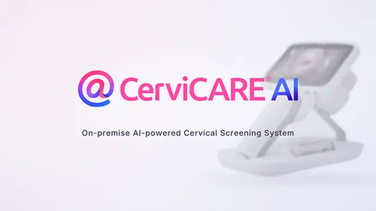

CerviCARE AI AT goes on-prem: NTL Healthcare's cervical-screening AI now runs on a clinic PC, no cloud required
NTL Healthcare is taking its AI cervical-screening system off the cloud. The Seongnam, South Korea–based women’s-health AI company announced today the global launch of CerviCARE AI AT, an on-premises version of its CerviCARE AI platform that analyzes cervical images on local clinic PCs — no dedicated server, no cloud upload required.
- CerviCARE AI analyzes cervical images and supports healthcare professionals in clinical decisions for cervical screening; the AT variant keeps the core AI analysis of the SaaS version but installs on local PCs inside the healthcare institution.
- No dedicated server or cloud infrastructure needed; analysis and data management happen inside the hospital's own IT environment, so cervical images never have to be transmitted or stored outside the institution.
- Hospitals can now pick SaaS or on-premises based on IT infrastructure, internal security policies, and data-management requirements.
- The release adds DICOM file generation: cervical images and related information convert into DICOM files, the standard medical-imaging format, slotting into existing hospital imaging infrastructure and records systems.
- Quote: “The global launch of CerviCARE AI AT represents an expansion of the CerviCARE AI platform,” said NTL Healthcare CEO Tae-hee Kim; the company will keep expanding deployment options to fit hospitals' IT environments, security policies, and data-management requirements.
What launched
CerviCARE AI analyzes cervical images and supports healthcare professionals in clinical decisions for cervical screening. The new AT variant keeps the core AI analysis capabilities of the existing SaaS version, but moves the deployment: it installs on local PCs inside the healthcare institution and operates without a dedicated server or cloud infrastructure. Hospitals can now pick SaaS or on-premises based on their IT infrastructure, internal security policies, and data-management requirements, according to the company’s announcement.
Why on-prem matters here
As medical AI adoption expands, hospitals are asking not just how accurate a model is, but where their patients’ data goes. CerviCARE AI AT’s local architecture means cervical images — among the most sensitive medical data there is — never have to be transmitted or stored outside the institution. Analysis and data management happen inside the hospital’s own IT environment, giving it direct control over both.

The DICOM detail
The release also adds DICOM file generation: cervical images and related information can be converted into DICOM files, the standard format for medical imaging, so results slot directly into existing hospital imaging infrastructure and records systems.
“The global launch of CerviCARE AI AT represents an expansion of the CerviCARE AI platform,” said NTL Healthcare CEO Tae-hee Kim, adding that the company will keep expanding its deployment options to fit hospitals’ IT environments, security policies, and data-management requirements.
Why it matters
Medical AI’s adoption bottleneck is increasingly procurement, not accuracy. Hospitals — especially outside the cloud-comfortable US market — now ask vendors for data residency and audit control before they’ll deploy anything. SaaS-only vendors keep hitting that wall; a build that runs on a clinic PC removes the objection at the source. NTL Healthcare now offers the same screening AI two ways, and the announcement is explicit about why: performance is table stakes, and data control is the differentiator.
Sources: PR Newswire: NTL HEALTHCARE Launches On-Premises AI Solution ‘CerviCARE® AI AT’ Globally (Oct 15); Asia Business Newswire: NTL HEALTHCARE Launches On-Premises AI Solution ‘CerviCARE® AI AT’ Globally (Oct 15).
Frequently asked questions
What is CerviCARE AI AT?
An on-premises version of NTL Healthcare's CerviCARE AI cervical-screening platform: it keeps the core AI analysis capabilities of the existing SaaS version but installs on local PCs inside the healthcare institution — no dedicated server, no cloud upload.
Why does on-premises matter for cervical screening?
Cervical images are among the most sensitive medical data there is. Local deployment means they never have to be transmitted or stored outside the institution, giving hospitals direct control over data — increasingly the procurement requirement for clinical AI, not just accuracy.
What's new besides the on-premises build?
DICOM file generation: cervical images and related information can be converted into DICOM files, the standard format for medical imaging, so results slot directly into existing hospital imaging infrastructure and records systems.